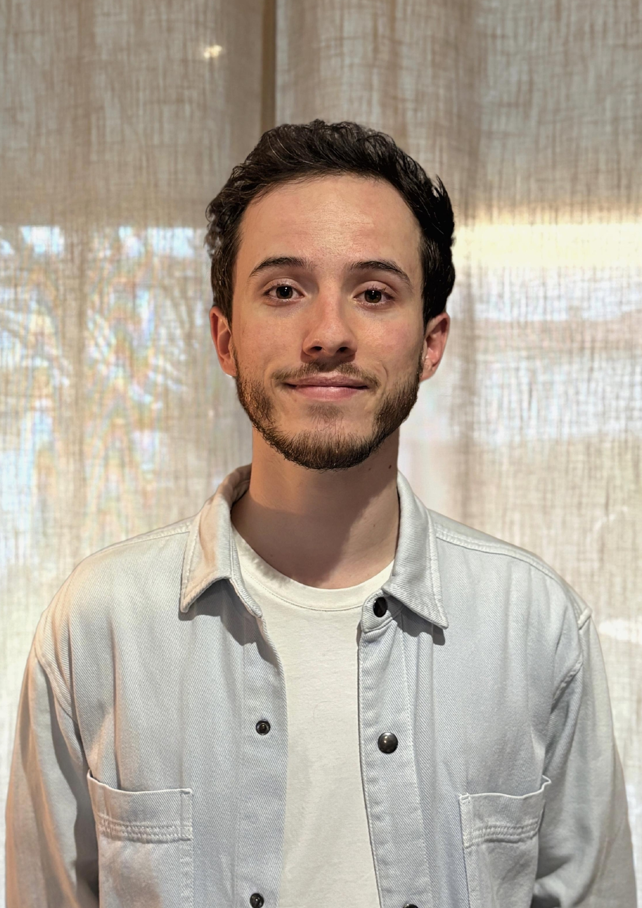

Expériences professionnelles
- Cabinet d’orthoptie – Toulouse - Depuis 2026
- Cabinet d'orthoptie – Muret 2024-2025
- Orthoptiste salarié - Centre Ophtalmologique de Toulouse - 2023-2024
- Orthoptiste hospitalier - CHU Purpan 2023
Diplômes et formations
- Certificat de capacité d’orthoptiste - Toulouse
- Diplôme d'Université Troubles du Spectre Autistique (DU TSA) : Actualisation des connaissances et pratiques professionnelles
- Formation UNRIO "Autisme et Neurovision : La place de l'orthoptie"
- Formation aux Premiers secours en santé mentale (PSSM)"